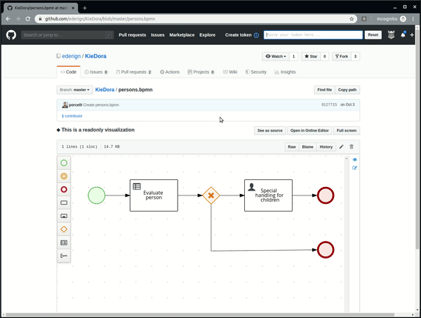

Kogito Tooling Chrome Extension improvements
This week we released version 0.2.5 of our GitHub Chrome Extension featuring a major improvement — GitHub Personal Access Token and GitHub’s official API integration.
This update allows users to provide a Personal Access Token to the extension so that the BPMN/DMN editors can be used on private repositories and also so that we can avoid delays after updating a file.
This is also the first step to implementing the Resource Content API, a feature we’ve been working on for some time now that will allow editors to interact with the ‘workspace’ they’re open on. Stay tuned, William will publish a blog post about that soon!
Let me explain this Personal Access Token thing in more detail. Prior to 0.2.5, we used raw.githubusercontent.com to fetch files from GitHub, but since this domain is probably only used to eventually serve files as ‘text’, we were experiencing a delay after updating a file, so if you changed a BPMN diagram directly on GitHub and pressed “Commit”, you’d be redirected to the visualization page, but you’d see the previous version of that file for some time, since raw.githubusercontent.com takes a while to ‘sync’ with the repository.
To solve that problem, we started using GitHub’s official Rest API through their very neat TypeScript library, Octokit. But of course nothing is as easy as it seems. The official GitHub API has a very aggressive throttling policy, allowing only 60 requests per hour per IP address. By authenticating with a Personal Access Token, that limit goes up to 5000 requests per hour. That’s why we’re introducing a way for users to provide a Token that can be used by Octokit to make these requests.
Below you can see how to setup your Token on the GitHub Chrome Extension. Notice that a grayed-out Kogito icon means that you’re not authenticated and a colored one means that you are.

For public repositories, you can use a token with no special permissions, so when creating one, you may leave every checkbox unchecked. For private repositories, though, the repo permission is needed. It’s important to say that your token is never shared or stored anywhere else other than your machine. Naturally, you can always remove a Token you provided or revoke this Token’s permissions directly on GitHub’s Settings page.
If you don’t want to provide a Personal Access Token to the extension, that’s fine too. We always fallback to using raw.githubusercontent.com, but be aware that some nice features might not be available. Consider authenticating to enjoy everything our GitHub Chrome Extension has to offer.
Hope you guys enjoyed this little update and, as always, stay tuned for more news!
Kogito Tooling Chrome Extension improvements was originally published in kie-tooling on Medium, where people are continuing the conversation by highlighting and responding to this story.